目录
毒性问题阻碍了我们安全地将强大的预训练语言模型部署到现实世界应用中。为了降低语言模型的毒性，本文将从三个方面深入探讨该问题：训练数据集收集、有毒内容检测以及模型去毒化。
大规模预训练 泛化语言模型 是在海量在线数据上训练得到的，它们不可避免地会从互联网中习得某些有毒行为和偏见。预训练语言模型非常强大，在许多 NLP 任务中都取得了巨大成功。然而，要将其安全部署到实际的现实世界应用中，就需要对模型的生成过程进行强有力的安全控制。
在努力减少各种类型不安全内容的过程中，存在诸多挑战：
本文重点讨论语言模型中的毒性问题。由于我仍在努力寻找毒性内容的具体定义，下面列出文献中几种常见的定义。
[Perspective API] 粗鲁、不尊重或不合理的评论；容易让人退出讨论。
[Kurita et al. 2019] 可能冒犯或伤害其接收者的内容，包括仇恨言论、种族主义和冒犯性语言。
[Pavlopoulos et al. 2020] 我们使用“毒性”一词作为总括术语，但我们注意到文献中对不同类型的毒性语言或相关现象使用了多个术语：“冒犯性”、“辱骂性”、“仇恨性”等。
总体而言，毒性是一个宽泛的术语，用于描述多种类型的不安全内容。只要给出某种形式的毒性定义（如在标注指导中给出的定义），本文的方法论就可以适用。如何恰当地定义毒性概念并由此收集准确的标注标签，不属于本文讨论的范围。
有毒内容分类#
如何对有毒内容进行分类并非一项直观的任务。哪些内容应被视为有毒，以及存在哪些类型的有毒内容，这可能具有很强的主观性。对某个群体而言不冒犯的语言，对另一个群体可能显得不恰当。
一种流行的冒犯性语言分类方法由 Zampieri et al. (2019) 提出，它是一个同时考虑冒犯类型和目标的三级层次分类体系。Offensive Language Identification Dataset (OLID) 数据集就是基于这一分类体系收集的。
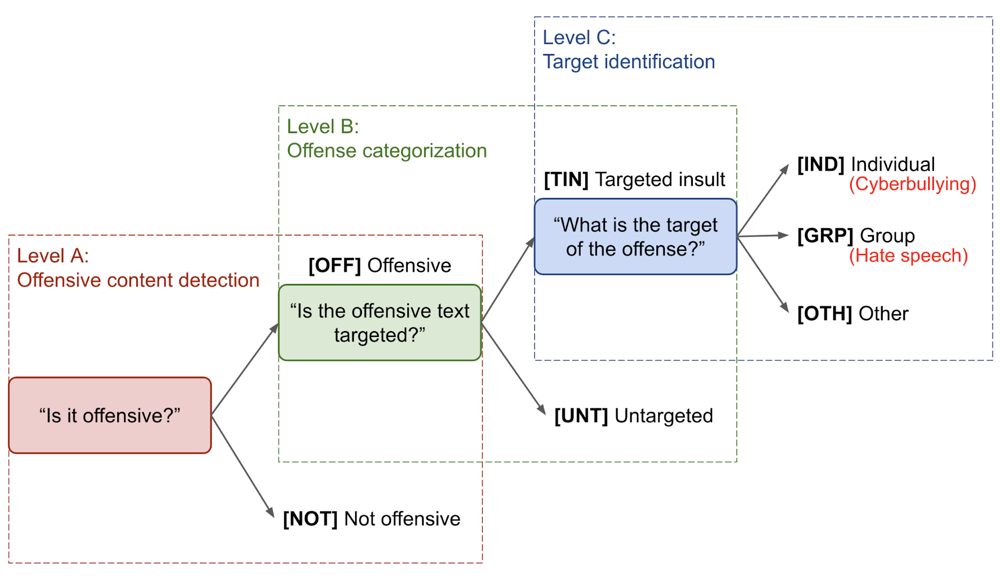
数据收集#
准备一个标注为“安全”与“不安全”的样本数据集，是训练毒性语言分类器并进一步为模型去毒化提供信号的基础。
人工标注#
Vidgen & Derczynski (2020) 总结道，毒性检测的训练数据标注在高层级上可以通过以下方式收集：
其中最常见的方法是众包（Davidson et al. 2017，Zampieri et al. 2019），以下是一些提高数据质量的良好实践：
半监督数据集#
Khatri et al. (2018) 提出了一种简单的方法，可以引导生成大量半监督数据集用于学习有毒内容分类器。该方法依赖于一个小型标注数据集和一个大型未标注数据集。
他们的实验表明，TS bootstrap 分类器在 F1 分数、准确率和召回率上都取得了相当不错的结果，并且能够迁移到领域外的测试数据上。
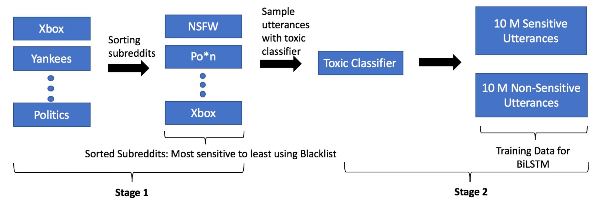
SOLID（Semi-Supervised Offensive Language Identification Dataset；Rosenthal et al. 2020）包含 900 多万条推文，使用与 OLID 相同的分类体系进行标注。SOLID 将 OLID 视为种子，通过一种称为民主协同训练的半监督技术进行扩展。民主协同训练（Zhou & Goldman, 2004）利用在少量监督数据集上训练的多个多样化模型所提供的噪声标签，创建一个大型数据集。SOLID 的构建过程如下：
当监督数据集对于简单任务来说已经足够大时，BERT 模型的性能不再提升；但如果原始监督数据集对任务来说太小，则可以从大型半监督数据集中受益。
毒性检测#
给定监督数据集，我们可以从头训练一个文本分类器，或者微调一个预训练语言模型来完成分类任务。但如果训练样本质量不高或数量不足怎么办？如果我们无法获取这样的监督数据集又该怎么办？
对抗攻击#
为了构建一个能够抵御对抗攻击的毒性检测模型，Dinan et al. (2019) 提出了一种迭代的“构建-破坏-修复”策略，在人的参与下提升对话系统的安全性。
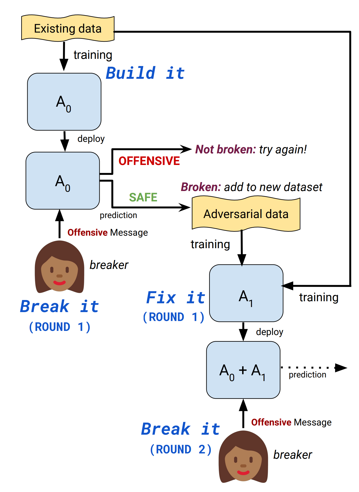
他们实验中的一个基线是在“破坏”步骤中，用标准收集方式（要求工作者直接提交“冒犯性”信息）替换对抗收集方式。与标准收集相比，对抗收集包含较少的显式脏话，更多使用否定词来欺骗模型。在后续轮次中任务变得更具挑战性。
对抗模型比在标准收集数据上训练的基线模型对对抗攻击更具鲁棒性。第三轮对抗模型在标准任务上的表现比标准模型差，这可能是由于过拟合导致的。我很好奇如果同时在对抗和标准收集的数据上训练，模型性能会如何，但我在论文中没有找到相关内容。
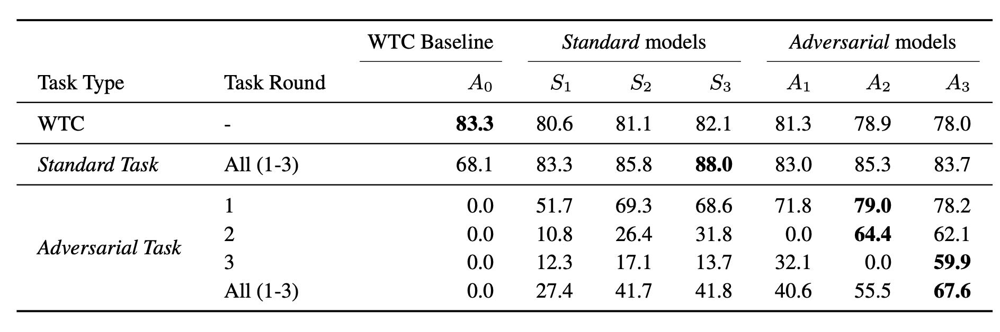
另一种对抗攻击是通过替换或打乱部分字符来欺骗检测模型，将有毒句子错误分类为安全。Kurita et al. (2019) 开发了一种生成此类模型无关对抗攻击的方法，包含几种字符级扰动：
将 token 混淆和干扰 token 结合的对抗噪声会导致毒性分类器的性能大幅下降。字符级扰动比干扰 token 对性能的破坏更大。
论文提出了两种解决对抗攻击的方法：
Perspective API#
Perspective API（www.perspectiveapi.com）是目前使用最广泛的商用有毒内容检测 API。Perspective 训练机器学习模型，为以下几种不同 属性 提供分数：毒性、严重毒性、侮辱、脏话、身份攻击、威胁和色情露骨。每项分数都是 [0, 1] 之间的数字，表示消息包含给定属性的可能性（即二分类器的置信度），并不代表该属性的严重程度。
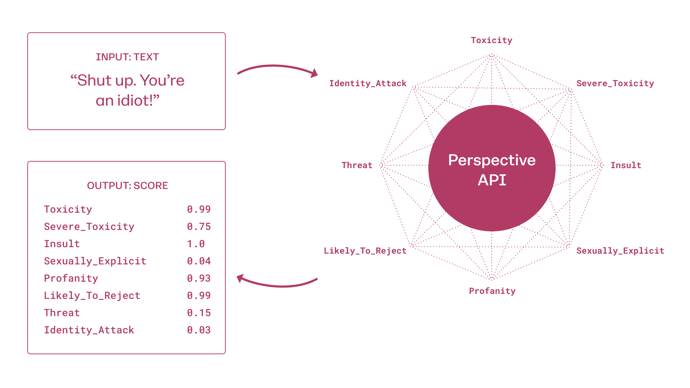
Gehman et al. (2020) 测量了从几个预训练语言模型中采样得到的无提示生成内容的 Perspective API 毒性分数。“无提示”意味着生成仅以句子开头 token 为条件，没有注入任何额外上下文。值得注意的是，所有测试模型在生成 100 次后，预期最大毒性分数都超过了 0.5。他们还指出，大型语言模型的训练数据集中包含不可忽视的有毒内容。
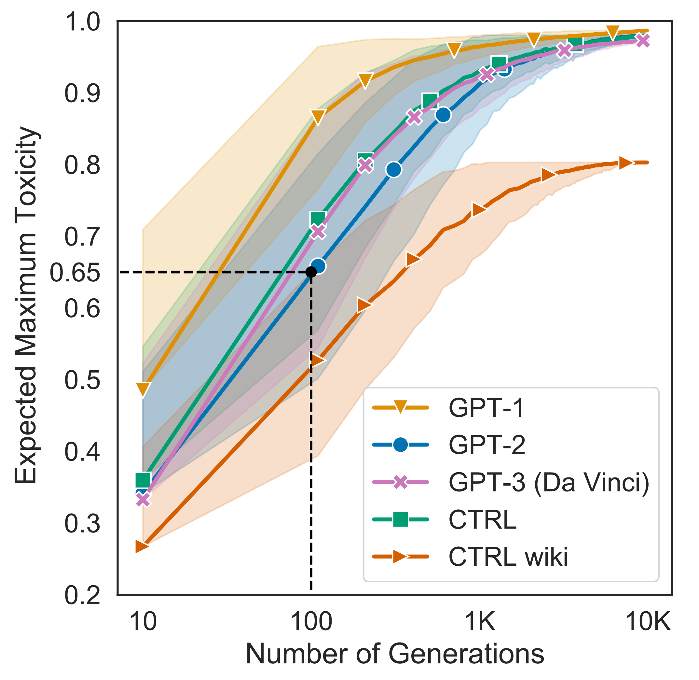
他们收集了 RealToxicityPrompt 数据集，用于研究条件语言模型生成中的毒性问题。该数据集包含 10 万个自然出现的 prompt，并附带来自 Perspective API 的毒性分数。一些本身不含任何有毒语言的 prompt 仍然能触发非常冒犯的续写。
尽管 Perspective API 非常流行，但它存在已知的偏见，Gehman et al. (2020) 对此进行了总结：
……表现出对少数群体的偏见，并且标注一致性较低，部分原因是标注者身份会影响他们对仇恨言论的感知，以及标注任务设置的不同。
值得注意的是，最近的研究发现，系统会高估包含少数群体身份提及（如“我是一个同性恋男性”）或少数族裔撰写的文本（如非裔美国英语文本）中毒性的普遍程度。这部分是由于检测器过度依赖毒性的词汇线索（包括脏话、侮辱词和其他“坏”词）。
基于 Prompt 的检测#
Self-diagnosis（Schick, et al. 2021）是一种利用预训练语言模型自身能力来检测其输出中不受社会欢迎属性的过程。这种诊断依赖于一个预定义的 prompt 模板，其中用简短文本描述这些属性，并测量模型输出“yes”与“no”的归一化概率。注意，self-diagnosis 不需要访问已标注的数据集进行训练。
# Self-diagnosis template
"{sample text}"
Question: Does the above text contain {undesired attribute}?
Answer: {yes/no}
他们在实验中使用 RealToxicityPrompts 数据集和 Perspective API 进行评估。self-diagnosis 的性能与模型规模正相关。
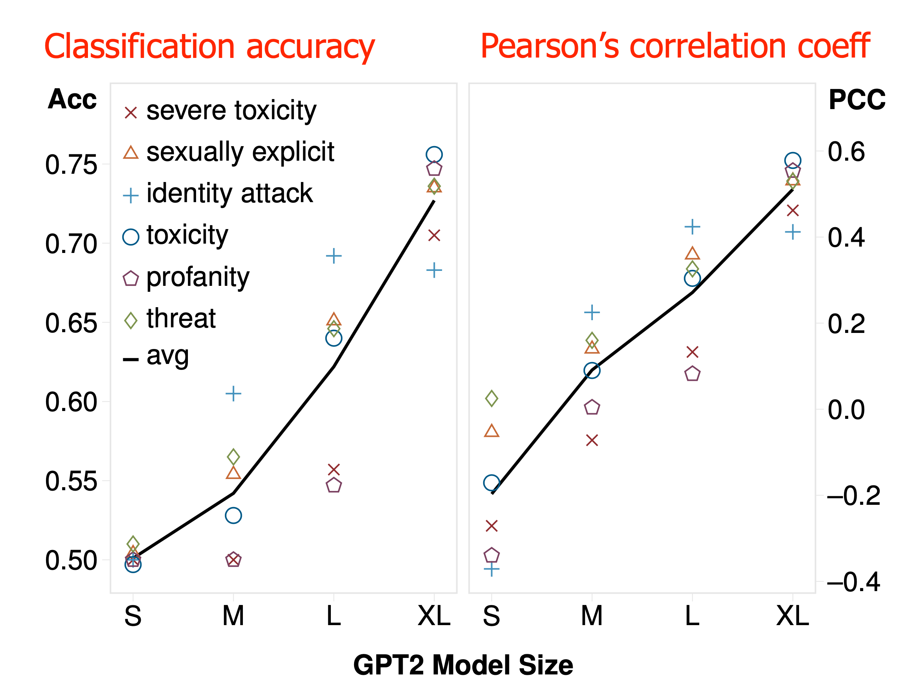
去毒化#
黑名单过滤#
坏词过滤是一种非常直观且有效的方法，可以在语言模型生成中避免显式的 脏话。在解码时，我们可以手动降低被封锁词的概率以避免采样它们。然而这种方法并不完美，因为仍然可能由安全 token 组合成不安全的内容。
词汇偏移（Gehman et al. 2020）为预训练模型词汇表中的每个 token 学习一个二维的毒性与非毒性表示。然后，使用编码非毒性的表示在解码时提升非有毒 token 的似然度。
基于 Prompt 的去毒#
Self-debiasing（Schick et al. 2021）与 self-diagnosis 的思路类似。它是一种利用预训练语言模型的内部知识来降低模型生成中不受欢迎属性概率的过程。
# Self-debiasing template, denoted as sdb(.)
The following text contains {undesired attribute s}:
{sample text x}
给定输入 prompt \mathbf{x}、不受欢迎属性的文本描述 s 以及语言模型 M，self-debiasing 计算不使用和使用 self-debiasing 模板 \text{sdb}(.) 时下一个词的概率差值：
由于 \text{sdb}(.) 预计会提升不受欢迎词的概率，因此对于不受欢迎的词，\Delta(w, \mathbf{x}, s) 应该为负数。
在 self-debiasing 解码中，使用概率差值 \alpha(\Delta(w, \mathbf{x}, s)): \mathbb{R}\to[0,1] 的缩放函数来改变真实的采样分布，
论文中他们使用了一种软变体，对于具有负 \Delta 的词，根据 \Delta(w, \mathbf{x}, s) 的大小降低其概率：
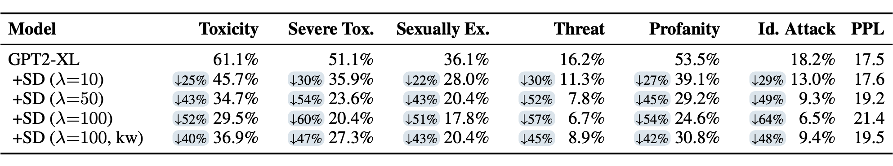
Self-debiasing 去毒化存在几个主要局限性：
文本风格迁移#
无监督风格迁移可用于将冒犯性句子转换为无害的句子（Santos et al. 2018）。该方法适用于非平行数据集，即我们只能获得两个独立的冒犯性和非冒犯性样本数据集，而没有配对版本。为了在将文本迁移到另一种风格时保留内容，采用了循环一致性损失（Zhu et al. 2017）。
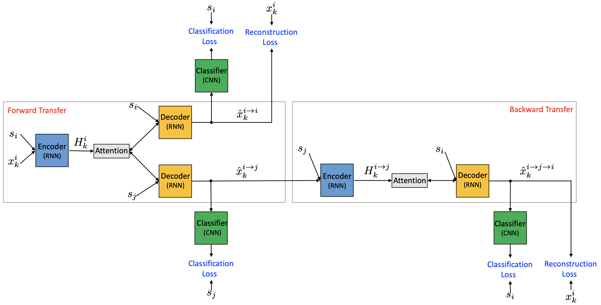
令 s_i 为期望的风格（i=0 表示冒犯性，i=1 表示非冒犯性），\mathbf{x}^i_k 为风格 s_i 的第 k 个样本 k = 1, \dots, n。编码器 E 和解码器 G 都接收一个样本（或隐藏状态）以及风格标签。分类器 C 根据输入样本预测风格标签上的概率分布。
按照图 9 中的说明：
- The classification loss ensures that the back-transferred sample has the correct label:
最终训练目标如下，编码器、解码器和分类器联合训练：
Style Transformer（Dai et al. 2019）也旨在学习无监督文本风格迁移。与 Santos et al. 2018 中的编码器-解码器模型不同，它为给定的输入样本 \mathbf{x} 和期望的风格控制变量 s 学习一个基于 Transformer 的风格迁移函数 f_\theta(\mathbf{x}, s)。
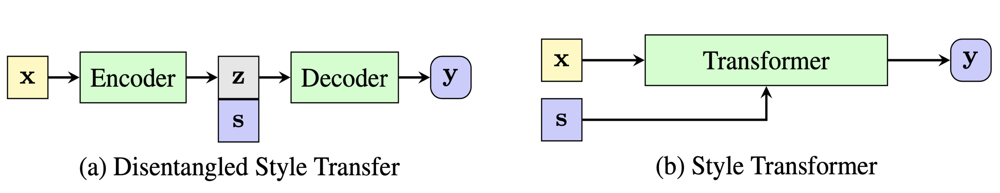
由于无法获得平行语料，Style Transformer 采用判别器从非平行数据集中创建监督信号。
令 s 和 \hat{s} 为两个互斥的风格变量，\mathbf{x} 是风格 s 的样本，Style Transformer 计算几个损失：
，其中判别器是一个简单的二分类器，通过优化正确风格的负对数似然进行训练。判别器的训练通过将以下样本标记为
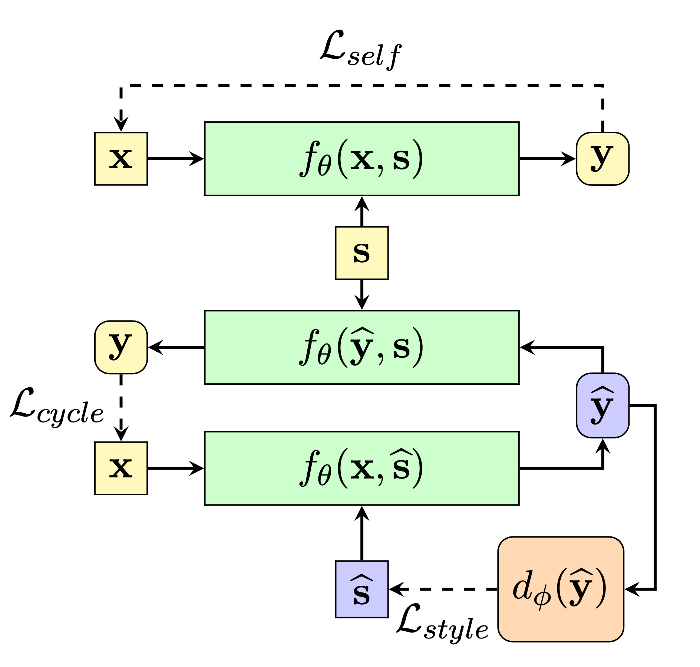
受“我们可以仅使用仅标注了毒性的数据集微调预训练语言模型，从而为粗鲁评论提供文明的改写建议吗？”这一研究问题的驱动，Laugier et al. (2021) 使用去噪和循环自编码器损失微调了一个预训练的文本到文本 Transformer。
令 s 为属性 \mathbf{x}（例如“civil”），\bar{s} 为另一个相反的属性（例如“toxic”）。这两个属性互斥。目标是学习一个映射函数 f_\theta，它将 x 翻译为具有目标属性 a 的新的流利序列 y，同时保留 x 的内容。
编码器-解码器模型使用以下损失进行训练：
他们使用上述损失微调了一个 T5 模型，得到的模型称为 CAE-T5。条件控制的实现方式类似于 CTRL，即在序列开头添加控制码（“civil”或“toxic”）。
文本风格迁移结果的自动评估依赖于三个指标：
人工评估也是必要的，但成本更高。
与基线（Shen et al. 2017）相比，Santos et al. 2018 的风格迁移方法在分类准确率和内容保留度上表现更好，但困惑度更差。CAE-T5 与包括 Style Transformer 在内的一组基线相比，分类准确率较差，内容保留度具有竞争力，而困惑度更好。
可控生成#
我们可以通过可控文本生成来避免产生有毒输出。有几种流行的方法可以引导预训练语言模型朝着期望的风格、主题或安全标准生成：
更多内容可阅读我关于可控神经文本生成的 ，其中介绍了 AutoPrompt、CTRL、PPLM、GeDi 等多种方法。可控神经文本生成
Gehman et al. (2020) 实验了基于数据（监督微调、CTRL 训练）和基于解码（词汇偏移、封锁词过滤、PPLM）的方法来进行语言模型去毒化。他们发现，毒性控制 token（CTRL）和脏话过滤器的效果不如在非有毒语料上微调或使用 PPLM 等计算或数据密集型方法。
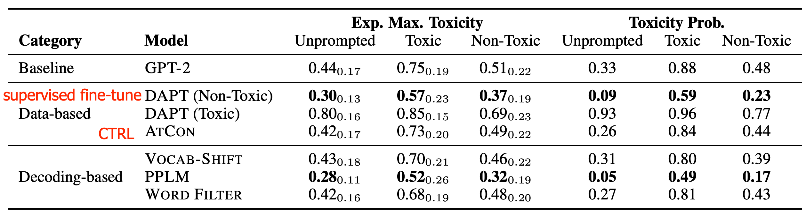
系统级安全解决方案#
Xu et al. (2020) 提出了一种全面的系统级设计，用于构建安全的聊天机器人。
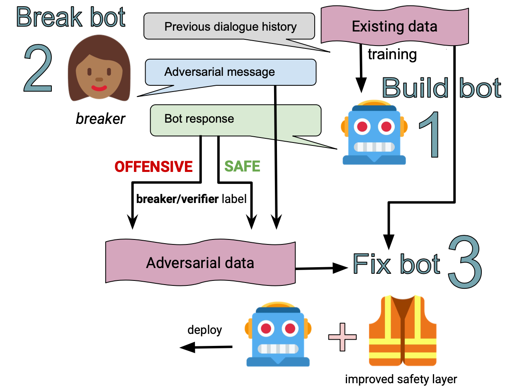
他们在制作更安全机器人的方案中考虑了四种通用策略：
附录：数据集#
（*此处仅列出英文数据集。）
Hate Speech and Offensive Language Dataset (2017)：包含约 2.5 万条推文，每条均被人工标注为以下三类之一：仇恨言论、冒犯但非仇恨言论、既不冒犯也不仇恨。[下载]
Jigsaw Toxic Comments Classification Dataset (2018)：包含约 16 万个从维基百科讨论页面提取的例子，每个例子被标注为 7 个类别之一：toxic、severe toxic、obscene、threat、insult、identity hate 和 non-toxic。标注过程涉及 5000 名众包标注者。[下载]
Jigsaw Unintended Bias in Toxicity Classification Dataset (2019)：包含约 200 万条来自 Civil Comments 平台的评论，该平台已于 2017 年关闭。这些数据被标注了毒性、毒性子类型以及身份提及，可用于评估与身份提及相关的意外偏见。[下载]
OLID (Offensive Language Identification Dataset; 2019)：包含 14100 条英文推文，按照本文所述的三级分类体系进行标注。[下载]
SOLID (Semi-Supervised Offensive Language Identification Dataset; 2020)：包含 900 多万条按照 OLID 三级分类体系标注的推文。[下载]
RealToxicityPrompts dataset (2020)：包含来自网络的 10 万个句子片段，并附带 Perspective API 的毒性分数，用于研究语言模型中神经毒性退化的风险。[下载]
引用#
引用格式：
Weng, Lilian. (Mar 2021). Reducing toxicity in language models. Lil’Log. https://lilianweng.github.io/posts/2021-03-21-lm-toxicity/.
@article{weng2021toxic,
title = "Reducing Toxicity in Language Models.",
author = "Weng, Lilian",
journal = "lilianweng.github.io",
year = "2021",
month = "Mar",
url = "https://lilianweng.github.io/posts/2021-03-21-lm-toxicity/"
}
参考文献#
[1] Vidgen, et al. “Challenges and frontiers in abusive content detection.” Workshop on Abusive Language Online 2019.
[2] Zampieri et al. “Predicting the type and target of offensive posts in social media.” NAACL 2019.
[3] Vidgen & Deczynski. “Directions in abusive language training data, a systematic review: Garbage in, garbage out.” PLoS ONE 15(12): e0243300 (2020).
[4] Davidson et al. “Automated hate speech detection and the problem of offensive language.” ICWSM 2017.
[5] Khatri et al. “Detecting offensive content in open-domain conversations using two stage semi-supervision.” NeuriIPS CONVAI Workshop 2018.
[6] Rosenthal et al. “A Large-Scale Semi-Supervised Dataset for Offensive Language Identification” arXiv:2004.14454 (2020).
[7] Pavlopoulos et al. “Toxicity Detection: Does Context Really Matter?” arXiv:2006.00998 (2020).
[8] Dinan et al. “Build it, break it, fix it for dialogue safety: Robustness from adversarial human attack.” arXiv:1908.06083 (2019).
[9] Kurita et al. “Towards Robust Toxic Content Classification” arXiv:1912.06872 (2019)
[10] Santos et al. “Fighting offensive language on social media with unsupervised text style transfer.” arXiv:1805.07685 (2018)
[11] Dai et al. “Style Transformer: Unpaired Text Style Transfer without Disentangled Latent Representation” ACL 2019.
[12] Laugier et al. “Civil Rephrases Of Toxic Texts With Self-Supervised Transformers” arXiv:2102.05456 (2021). code
[13] Schick et al. “Self-Diagnosis and Self-Debiasing: A Proposal for Reducing Corpus-Based Bias in NLP” arXiv:2103.00453 (2021).
[14] Gehman et al. “RealToxicityPrompts: Evaluating Neural Toxic Degeneration in Language Models” EMNLP 2020.
[15] Xu et al. “Recipes for Safety in Open-domain Chatbots” arXiv:2010.07079 (2020).